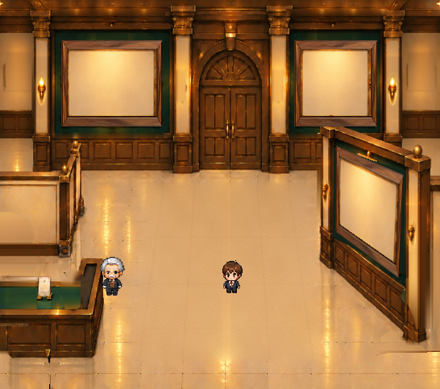

天井灯8点と受付ランプを独立素材化しました
「本体」と「発光」を分けています。天井の8灯は共通部品と配置情報から再利用できる構造です。背景や写真、正式キャラクターは変更していません。
画像を読み込んでいます
外したときの下地も比較できます

元画像の下に隠れていた天井・受付部分は、周囲の色と模様から推定修復しています。再合成した点灯状態も原画の画素完全一致ではありません。今回は美術確認用の候補であり、ゲーム本体への正式組み込みやLv別割り当ては未実施です。既存29・30・50番の素材は変更していません。